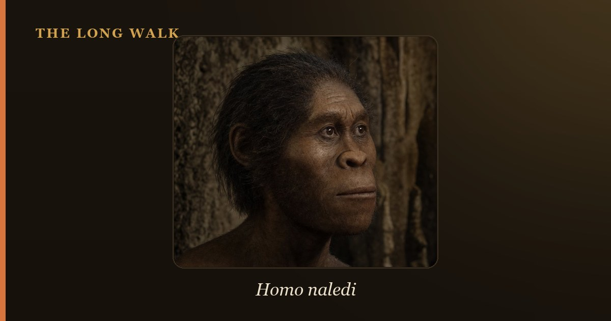

Homo naledi vs Australopithecus is a comparison of a body plan, not of neighbours in time. Homo naledi, found in South Africa's Rising Star cave, lived about 335,000 to 236,000 years ago. Australopithecus had died out roughly 2 million years before. Yet naledi had an australopith-sized brain (about 465 to 610 cc), a flaring pelvis and curved fingers, combined with Homo-like feet, wrists and teeth.

In September 2013, the cavers Rick Hunter and Steven Tucker squeezed through a crack in the Rising Star cave system, in South Africa's Cradle of Humankind, and found bones scattered across the floor of a deep chamber. The way in included a vertical chute about 18 centimetres wide at its narrowest. Lee Berger's team recruited slim excavators to work in the chamber, which became known as Dinaledi. By 2015 they had recovered about 1,550 fossil specimens from at least 15 individuals, one of the largest collections of a single hominin species in Africa.
The Homo naledi vs Australopithecus question arose immediately. The skeletons looked part australopith and part human. The best way to see that is to work through the body from head to foot.
Homo naledi vs Australopithecus, from skull to foot
| Body part | Homo naledi | Australopithecus | Naledi looks like |
|---|---|---|---|
| Brain size | ~465–610 cc | ~400–550 cc | Australopith |
| Brain shape | Frontal lobe shaped like Homo | Ape-like frontal lobe | Homo |
| Teeth | Small, simple molars | Large molars | Homo |
| Shoulder | Shrugged, suited to climbing | Similar | Australopith |
| Hand | Human-like wrist and thumb, curved fingers | Curved fingers, less human wrist | Both |
| Pelvis | Flaring hip blades | Flaring hip blades | Australopith |
| Foot | Arched, in-line big toe, almost human | Partly arched, more varied | Homo |
Skull and brain
Naledi's braincase is small. The Dinaledi skulls held about 465 to 560 cc, and a skull from a second chamber, Lesedi, described in 2017 and nicknamed “Neo”, held about 610 cc. That overlaps with Australopithecus and sits well below Homo erectus. Ralph Holloway and colleagues studied impressions of the brain on the inside of the skull in 2018 and reported that its frontal lobe was shaped more like that of Homo. A small brain does not mean a simple layout.
Teeth
The teeth are small, with simple crowns, more like later Homo than the large-molared australopiths. That suggests naledi was not relying on heavy chewing of tough plant food the way Australopithecus and especially Paranthropus did.
Shoulder, arms and hands
The shoulder is set high, with a narrow upper chest, much like Australopithecus. Tracy Kivell's 2015 study of an almost complete right hand found a human-like wrist and a long, strong thumb, alongside finger bones more curved than in any other early Homo. The hand seems built for both precise handling and climbing.
Hips, legs and feet
The pelvis has flaring hip blades like Lucy's. Lower down, the picture switches. William Harcourt-Smith's 2015 study of the foot found it largely human-like, with an arch and a big toe in line with the others. Adults stood about 1.4 to 1.5 metres tall and weighed about 40 to 55 kg. Naledi walked on the ground like a human but kept the shoulders and fingers of a climber.
Why naledi is placed in Homo
Berger's team named the species Homo naledi because of the features linked to later humans: the skull shape, small teeth, wrist, legs and feet. Critics argue that a brain this small and a pelvis this primitive could equally justify placing it in Australopithecus or a genus of its own. The disagreement shows that the boundary of Homo is hard to define. Is it defined by brain size, by teeth, by how the species walked, or by its position on the family tree? Naledi meets some of these criteria but not others. Its genus is still debated.
A second chamber: Lesedi
In 2013, while work continued in Dinaledi, cavers found a second chamber with hominin bones elsewhere in the Rising Star system. Excavation of this Lesedi Chamber, described in 2017, produced remains of at least three individuals, two adults and a child. The most complete, LES1 or “Neo”, includes much of a skull and parts of the skeleton. Neo's anatomy matched the Dinaledi fossils, confirming that the strange mix of features belonged to one species and was not the result of mixing bones from different animals.
Lesedi is also hard to reach, and like Dinaledi it contains few remains of other large animals. To Berger's team, two such chambers point to a repeated behaviour. To critics, they show that the cave system's geology could deliver bodies to remote places in ways not yet understood.
The surprise in the date
Most researchers expected a fossil this primitive to be around 2 million years old, close to Australopithecus sediba, another South African mosaic species dated to 1.98 million years. In 2017, Paul Dirks and colleagues dated the Dinaledi fossils to between about 335,000 and 236,000 years ago, using several methods on the teeth and the surrounding cave deposits.
That made naledi a contemporary of early Homo sapiens elsewhere in Africa. A small-brained hominin with a primitive pelvis survived long after the australopiths had gone. Either naledi descended from an early branch that persisted for a very long time, or it evolved some primitive-looking features again. The date also shows how little we know about southern Africa at that period.
Rising Star vs Sterkfontein
Rising Star lies in the same Cradle of Humankind as Sterkfontein, home of Mrs Ples and Little Foot, but the two caves preserve bones very differently. At Sterkfontein, australopith remains are mixed with large numbers of other animals in cemented cave breccia. Many arrived through openings at the surface, washed in or carried by predators. The Dinaledi Chamber holds almost nothing but naledi bones, in soft sediment, deep in the dark, with no clear sign that water or carnivores brought them there. For more on the South African australopiths, see Australopithecus afarensis vs africanus.
Did Homo naledi bury its dead?
The lack of other explanations led Berger's team to suggest that naledi deliberately placed bodies in the chamber. In 2023, they went further, claiming that naledi dug graves, engraved marks on the cave walls and used fire for light. Several scientists, including peer reviewers of the published papers, judged the evidence incomplete. Critics questioned whether the “graves” were deliberate pits, whether the engravings could be dated or tied to naledi, and whether the soot was analysed. These claims remain contested. See Did Homo naledi bury its dead?
Homo naledi vs Homo floresiensis
Naledi is often compared with Homo floresiensis, the small hominin of Flores, Indonesia. Both had small brains (floresiensis about 426 cc) and lived late, both mixed primitive and modern traits, and both challenge the idea that human evolution simply led to bigger brains. They differ in important ways. Floresiensis lived on an island, where small body size may have evolved; naledi lived on the mainland. Floresiensis is associated with stone tools; no tools have yet been found with naledi. The two are not thought to be closely related. See Homo floresiensis vs Homo erectus.
Did they ever meet?
No. Australopithecus disappears from the record about 2 million years ago, more than 1.5 million years before the Dinaledi fossils. The comparison matters because naledi shows that an australopith-like body plan, with a small brain and a climber's shoulders, could last much longer than once believed.
Naledi sits beside early Homo sapiens in time but looks back to the australopiths in body. Open the interactive timeline to see where it falls.
Explore the family tree →Homo naledi vs Australopithecus FAQ
Is Homo naledi an Australopithecus?
No. It is officially classed as Homo naledi because its teeth, skull shape, wrist, legs and feet resemble later Homo. Its small brain, flaring pelvis and climbing shoulders resemble Australopithecus, so some researchers question the genus.
How old is Homo naledi?
The Dinaledi Chamber fossils were dated in 2017 to between about 335,000 and 236,000 years ago, much younger than expected.
How big was Homo naledi's brain?
About 465 to 560 cc in the Dinaledi skulls, and about 610 cc in the Lesedi skull known as Neo. That is in the range of Australopithecus.
Did Homo naledi live at the same time as Australopithecus?
No. Australopithecus had died out by about 2 million years ago, long before Homo naledi.
Did Homo naledi bury its dead?
Its discoverers argue that it did, and in 2023 also claimed engravings and fire use. Many scientists consider the evidence incomplete, so the claims remain contested.
- Berger, L. R. et al. (2015). 'Homo naledi, a new species of the genus Homo from the Dinaledi Chamber, South Africa.' eLife 4:e09560. doi.org
- Dirks, P. H. G. M. et al. (2017). 'The age of Homo naledi and associated sediments in the Rising Star Cave, South Africa.' eLife 6:e24231. doi.org
- Hawks, J. et al. (2017). 'New fossil remains of Homo naledi from the Lesedi Chamber, South Africa.' eLife 6:e24232. doi.org
- Kivell, T. L. et al. (2015). 'The hand of Homo naledi.' Nature Communications 6:8431. doi.org
- Harcourt-Smith, W. E. H. et al. (2015). 'The foot of Homo naledi.' Nature Communications 6:8432. doi.org
- Holloway, R. L. et al. (2018). 'Endocast morphology of Homo naledi from the Dinaledi Chamber, South Africa.' PNAS 115. doi.org